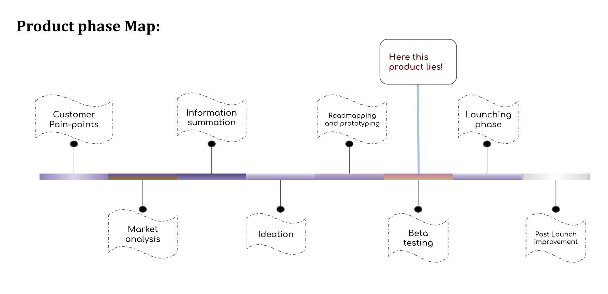
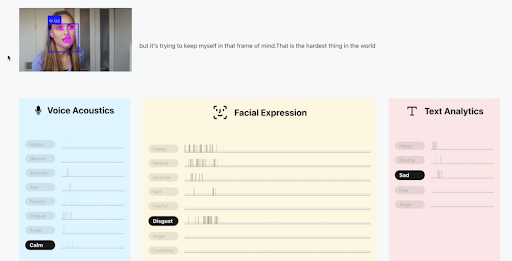
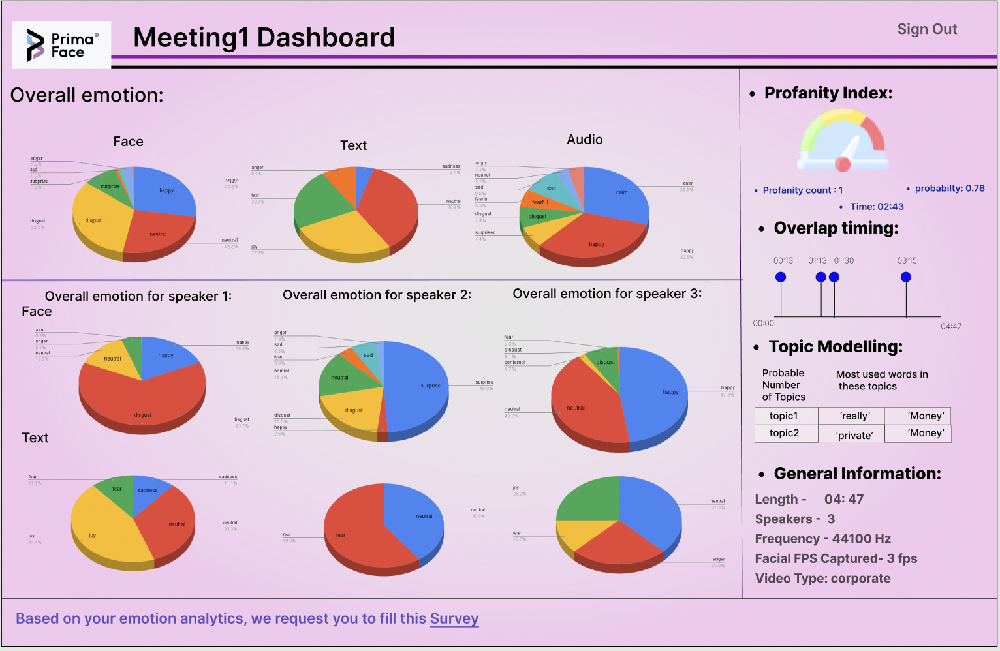

Technical PM lead of primaFace
PrimaFace is an early stage-startup with a pre-seed of around $500k and it's aiming to become the first RnD startup into mental health technology space. He has been leading the technical prouct management side of PrimaFace and equity based founding team member since Sep 2021.
Building the first core Product: EmoBit
EmoBit is envisioned to be a system which will gather information from different modalities of emotion expression mediums and scores the emotions accordingly. On the behavorial with hisorical emotion trend will help mental-health professionals and individual to track there daily emotions. He has been responsible for taking the lead as a Technical product manager to analyse the potential market analysis, research gaps, building aspects and potential features, suggesting different AI architectures.
-
Product Type: SaaS
-
Industry: Cognitive AI, Mental-health tech.
-
Product Vision: The initial company vision was designed towards capturing videoframes from zoom/Google meets to detect the emotions during any video conference. The future long-term vision is to provide digital emotional Avatar and tokenize the avatar. He was responsible for pivoting the inital market-segment from video conference apps to entirely mental health sector with technological integrations. The product vision is now oriented in serving emotion tracking which will help correlating with mental-health professionals to focus more on their clients daily emotion-well being.
-
Market Analysis: He was responsible for conducting the market research where a huge research gap in technical appication on mental health ground was found. To justify the product market-fit from business perspective, it wass found that around 19.86% or 50M US adults suffers from some kind of mental health issues and also around 81% digital data across the world seems to have no utlization at all.
-
Customer painpoints: A major painpoint noticed among the potential users that although they expresss a huge interest on the product application side, they've raised a concern related to the data privacy and data management system as the emotional data might be more prone to privacy restrictions.
-
Ideation: To detect the emotional well-being, the 3 major modalities were selected such as face expression, acoustic nature, textual behaviour to get the best possible emotion score. The product has been ideated to capture these modalities and run ML models on these data to get the final emotion results. To cater the customer major painpoint, the customers data is ideated to be converted into mathematical vectors which're then supposed to be encrypted and store in decentralized system. To take care of the trend analysis, timeseries based features were necessary and thus he ideated an graphical dashboard to ease of customer's emotional trend analysis. He was also reponsible for analysing mental health space by determining around 96 emmotion segments from emotion wheel.

-
Prototyping and architecting: This product development and prototyping was more aligned with RnD based system. He worked very closely with data science engineering team to experiment over more than 50+ ML models with different output schemes such as classfication, valence arousal based systeem. As an early stage startup, and to develop high level of ML models, it had to be done within budget revenue constraints and thus the MVP was built using technical strategies with integrations with different APIs google ML models, and other opensource tools to have an optimized design. The data storage systems are being architect by vectorizing the raw data and on top of that an cryptographic encryption layer and store that data on a blockchain based cloud storage. He was also responsible for coordinating with the IT team to design the cloud base machine learning modelling, advising data extracting procedures for optimal load on the virtual instances.
-
Beta testing and Validation: As this product oversects with technical, RnD and medical segments together, so the Beta phase is divided into two sub-phases. In first phase, which is currently going on, the product are getting tested under clinical psychriatrists at Atlanta, US such that they can validate the usgae of the product as a good product market-fit from B2B perspective as well as medical validation. And these users are also supposed to be used as a channel of Go-To-Market strategy once it gets out of the Beta phase. On phase it will be tested with regular B2C consumers to test customer journey.
